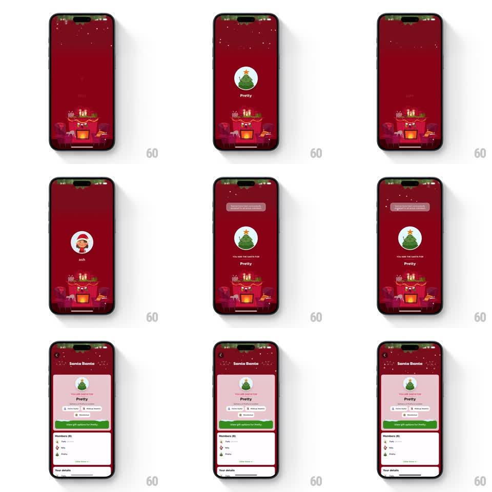

Media
Frame-by-frame

Rebuild this animation 1:1: Blinkit's Secret Santa picker - a festive red screen cycles a circular avatar through group members with falling snow, lands on the assigned recipient with "YOU ARE THE SANTA FOR", then transitions into the full assignment card layout.

Rebuild this animation 1:1: Blinkit's Secret Santa picker - a festive red screen cycles a circular avatar through group members with falling snow, lands on the assigned recipient with "YOU ARE THE SANTA FOR", then transitions into the full assignment card layout. ## Integration Integration: stack-agnostic spec - springs given as stiffness/damping, timed motions as duration + curve; map every value to your framework and animation library of choice. ## Scene A deep red Christmas scene: snowflakes drift down over an illustrated fireplace with stockings at the bottom. At center, a circular avatar slot cycles rapidly through group members (a tree named "Pretty", an elf named "ash") with the member's name below. The cycling slows, lands on the recipient, and a "YOU ARE THE SANTA FOR" label appears above the name. The layout then expands into the "Santa Banta" detail card: recipient header, wishlist chips, a green "View gift options for Pretty" button, and a members list below. ## Motion spec Pattern: slot-machine picker with celebratory reveal, ~4s total. - Snow falls continuously across the whole sequence (30 flakes, 4 to 8s fall time, gentle sway). - The avatar cycles through members (swap every 120ms, each swap a quick scale-out/scale-in, 150ms), accelerating then decelerating over 2s. - On the final member, the avatar settles with an overshoot bounce (spring stiffness 300 damping 12) and a soft glow ring pulses behind it (600ms). - "YOU ARE THE SANTA FOR" fades in above the name (300ms); a toast slides down from the top. - The scene then transitions: avatar and label shrink and rise into the detail card's header (500ms shared-element style) as the card's white content sheet slides up (spring stiffness 280 damping 24), revealing chips, button, and members list with a 60ms row stagger. ## Calibration - The deceleration is audible in the pacing: fast swaps, then visible slow-down beats before the landing. - The transition to the card is one continuous motion, not a cut. ## Reduced motion Avatar crossfades between members; card fades in. ## Don't miss - The fireplace illustration stays fixed at the bottom through the picker phase. - The member name swaps with each avatar, never lagging behind.